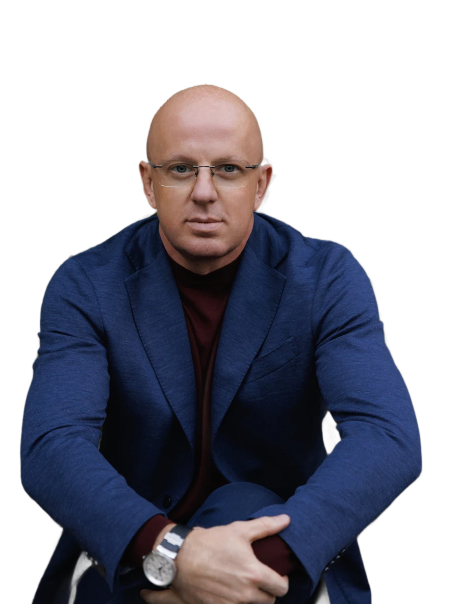

life? Longevity · Lifespan
Anti-aging
health? Healthspan · Performance
Biohacking
Prove it.
I check longevity and healthspan claims against the evidence: what works, for whom, and at what cost.
Latest verdict · 001Whole-body MRINot justifiedPublished findings. Questions under review.
Whole-body MRI: will it help healthy people live longer?
Finding more is not the same as living longer.
SHAGOV | VERDICT.Not justified. Read the review →NAD+ IV drips
Do they slow aging?
SHAGOV | VERDICT.In review Review in progressLipoprotein(a)
Can a single test tell you about a lifetime of heart risk?
SHAGOV | VERDICT.In review Review in progressChecking promises is half the work. The other half is building.
My current work explores how clinical expertise and technology can help physicians make health outcomes more measurable and accountable.

Yevgen SHAGOV MD, PhD
Physician · Healthcare founder · Systems architect
Associate Professor, Kyiv Medical University
One promise.
Four questions.
One dated verdict.
I check public health promises: tests, drips, devices, supplements, programs. A new verdict every week.
Diagnostics Not justified 7 Nov 2026
Infusions · Review in progress In review
Lab tests · Review in progress In review
Enough evidence that the promised benefit is real for this goal and this group of people, with an acceptable balance of benefit and risk.
There is a plausible rationale, but the evidence is insufficient to confirm the claimed benefit.
The claim exceeds the evidence, or the balance of expected benefit, risk and cost does not support it for this purpose.
Not how new.
Not how expensive.
Does it work?
I do not judge how new, expensive or popular a technology is. I judge whether there is a reason to use it for a specific goal.
Four questions
Three verdicts
Enough evidence that the promised benefit is real for this goal and this group of people, with an acceptable balance of benefit and risk.
There is a plausible rationale, but the evidence is insufficient to confirm the claimed benefit.
The claim exceeds the evidence, or the balance of expected benefit, risk and cost does not support it for this purpose.
What a verdict is, and what it is not
- A verdict is about one promise, one goal and one group of people. Not about the whole technology.
- For a treatment, Proven means the promised benefit is shown. A change in a lab marker is not enough.
- For a test, Proven means the test is shown to deliver what it promises: accurate detection, a better decision, or better health, whichever is claimed.
- Not justified is not a sentence on the technology. No proof of benefit is not proof of no benefit.
- Every verdict has a date. When new evidence comes, I review it and show what changed.
- No scores, no ratings. Three verdicts only.
- My own future services will be judged by the same scale. When I have a commercial interest, I say so.
Whole-body MRI:
will it help healthy people live longer?
In studies, most people scanned had some finding, and a small share had a confirmed cancer. No study has shown that people who get the scan live longer.
- Promise checked
- Find disease early, and live longer as a result. This is the expectation behind the offer, not a quote from one seller.
- Checked for
- Adults without symptoms and without a known high inherited risk.
- Not about
- MRI in general, or people with inherited cancer syndromes. For them, it is part of the plan.
What to do instead
- No symptoms, no strong family history?Skip the whole-body scan. Spend the money and time on checks that are proven.
- Do the proven checks for your age and sex.Blood pressure, cholesterol, colon, breast, cervix. Ask your doctor which apply to you.
- Worried about something specific?Ask for a test aimed at that question. A targeted test answers it better.
- Several relatives with cancer at a young age?Start with genetic counselling. If you carry a high-risk gene, whole-body MRI may be part of your plan.
- Already had a scan?Take the report to your doctor. Many findings turn out to be harmless. A doctor decides what needs follow-up.
- What will we do if you find something?
- What does a clean result not rule out?
- Is there proof it helps people like me live longer?
What the scan really finds
Estimates from a 2026 meta-analysis of heterogeneous, mostly low-quality studies of people without an established indication for whole-body MRI. Cancer detection was calculated in a subgroup of 4,463 participants. These figures are not an individual risk prediction.1
InsightA clean scan is not a clean bill of health. A screening scan without contrast is not designed to replace proven checks for the most common killers: heart disease, breast and colon cancer, stroke.8
What was promised, and what was shown.
- Implied promise
- Earlier detection will extend life.
- Proof needed
- Fewer deaths or other meaningful health benefits in people who were scanned, compared with people who were not.
- Evidence
- No demonstrated benefit on deaths in people without symptoms and without high inherited risk.
- Trade-offs
- More tests and procedures, cost, worry, possible false reassurance.
Four questions. Open any one.
01What is promised, and to whom?
One scan finds disease early, so you live longer. Sold to healthy adults.
Private clinics offer whole-body MRI to healthy adults as a way to find cancer and other disease early, before symptoms. The scan has no radiation, takes about an hour and is usually paid out of pocket.
The expectation behind it, as buyers understand it, is bigger than the scan: find it early, and live longer. That is what we test here.
02How can the result be checked?
Two similar groups, scanned and not scanned, followed for years.
Finding something is not the goal. The goal is fewer deaths and better health. To show that, you need two similar groups of healthy people. One gets the scan, one does not. Both are followed for years. Then you compare deaths and serious illness.
You also count the harms: extra scans, biopsies, operations, worry. A test that finds more but does not change the outcome has not done its job.
03What is proven in people?
Findings are common. A benefit on deaths has not been shown.
- There are no randomized trials comparing people who had the scan with people who did not. There are no reliable data showing fewer deaths from routine whole-body MRI in low-risk people without symptoms.1,2
- A 2026 meta-analysis reported at least one finding in 78% of people. 14.8% had a non-cancer finding that needed follow-up; of them, 58% went on to more tests and 21% to a procedure. 1.4% had a confirmed cancer, calculated in a subgroup of 4,463 people. The studies differed in populations and scan protocols, and only some described participants explicitly as without symptoms.1
- Earlier reviews, with different studies and definitions, came to similar conclusions: a confirmed cancer in about 1 to 1.6 out of 100 people, and no data on long-term outcomes.2,3
- Some cancers found by screening may never become clinically important. For whole-body MRI, how often this happens is still unknown.1,4
- The American College of Radiology, the Canadian Association of Radiologists and the American Academy of Family Physicians do not recommend whole-body screening for people without symptoms or risk factors.5,6,7
- The exception is real. For people with Li-Fraumeni syndrome, an inherited TP53 mutation with a very high lifetime cancer risk, a yearly rapid whole-body MRI is recommended.9
04What is the cost of being wrong?
More tests and procedures, cost, worry, false reassurance.
- Follow-up. A finding leads to more tests, and sometimes to a procedure. Each step has its own risk.1,5
- Worry. Weeks of waiting for an answer about something that may never have been a problem.
- False reassurance. A clean scan can make people skip checks that are proven.8
- Money. Usually not covered by insurance. Follow-up tests add more.
§Sources
9 sources: meta-analyses, reviews, medical society statements and expert commentary.
- Ahsan MD, Frontera N, Gurram A, et al. The diagnostic yield of whole-body MRI as a multi-disease screening modality: a systematic review and meta-analysis. J Gen Intern Med. 2026. doi.org/10.1007/s11606-026-10802-y
- Martins da Fonseca J, et al. Whole-body MRI for opportunistic cancer detection in asymptomatic individuals: a systematic review and meta-analysis. Eur Radiol. 2026;36(3):1813–1823. PubMed 40884613
- Zugni F, et al. Whole-body MRI for cancer screening in asymptomatic subjects of the general population: review and recommendations. Cancer Imaging. 2020;20:34. PMC7216394
- Davenport MS, Reeder SB. Elective MRI screening of the general public: buyer beware. JAMA. May 2026. Summary
- American College of Radiology. ACR statement on screening total body MRI. April 2023. acr.org
- Canadian Association of Radiologists. Whole-body MRI screening in asymptomatic individuals: policy statement. 2025. car.ca
- American Academy of Family Physicians, Choosing Wisely. Don't use whole-body scans for early tumor detection in asymptomatic patients. aafp.org
- Orenstein BW. Looking for trouble: radiologists question benefits of preventive whole-body MRI scans. Radiology Today. 2024;25(1):10. radiologytoday.net
- Li-Fraumeni Syndrome Association. Consensus statement on whole-body MRI surveillance. 2022. Kratz CP, et al. Clin Cancer Res. 2017;23(11):e38–e45. lfsassociation.org
Disclosure. The author declares no conflict of interest. On the date of this review, I have no financial interest in whole-body MRI.
Education only. Not medical advice. It does not replace a consultation with your own doctor.
Yevgen SHAGOVMD, PhD
Physician · Healthcare founder · Systems architect
Associate Professor, Kyiv Medical University
I have worked in medicine since 2003 and have been building medical businesses since 2009.
My work has included clinical services, physician networks, preventive medicine and medical education. Across these projects, I have focused on one recurring challenge: how to turn medical expertise into systems that deliver consistent, measurable value beyond the work of one physician.
Since 2018, I have also followed the health of hundreds of people over the years, including my own. This experience shaped the question that now defines my work:
Does an intervention actually help people live longer or live better, and how can we know?
Through SHAGOV | VERDICT, I examine the evidence behind the promises of longevity medicine, preventive health and performance optimization.
Longevity promises more years. Biohacking promises better ones. Both deserve the same question: where is the evidence?
Professional record
LONGEVITY & HEALTHSPAN. More years. Better years.
My principle is three words.
A forecast is not a promise. It is a promise to check.
My work focuses on making the results of preventive care measurable, transparent and open to verification across clinicians and settings.
For professional requests
Instagram @dr.shagov · LinkedIn
I do not see patients at the moment and do not give personal consultations.
Building healthcare systems.
I am a physician, healthcare founder and systems architect. Since 2009, I have built medical businesses, physician networks and professional education across Ukraine.
My focus is not only delivering medical services. It is creating systems that other physicians can use, with clear clinical standards and measurable outcomes. My work focuses on three areas of healthcare development. I welcome international partnerships to advance them.
Clinical technology
Software for physicians and clinics.
I am developing clinical software for physicians and clinics, with a focus on making health outcomes measurable, transparent and open to verification. Open to founder-level partnerships with investors, healthcare operators and technology teams.
International clinic networks
Evidence-led medicine, delivered through reproducible clinical systems.
Preventive and longevity medicine with consistent clinical standards, trained medical teams and accountable patient outcomes. Interested in partnerships that go beyond a single clinic to scalable models of care.
Population health systems
Prevention as long-term national infrastructure.
I am open to working with governments, public health institutions and national partners to develop long-term preventive-health systems that connect clinical expertise, physician education, technology and verified outcomes, to serve populations, not only individual patients.
Speaking & scientific leadership
Keynotes, scientific program development and expert panels on longevity, healthspan, preventive medicine and evidence-based healthcare.
Let’s build it together.
Investors, healthcare operators, public institutions and conference organizers: please include your organization, country and objectives.
I do not provide individual medical consultations. VERDICT reviews follow a separate editorial method and cannot be commissioned. Relevant commercial interests are disclosed.